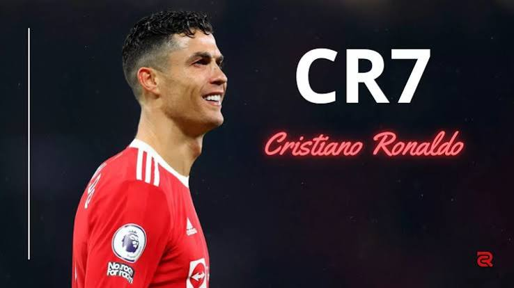

INTRODUCTION
Cristiano Ronaldo, souvent surnommé CR7, est un joueur international de football portugais, largement reconnu comme l'un des plus grands sportifs de tous les temps. Né le 5 février 1985 à Funchal (Madère), il s'est imposé comme une légende vivante du football grâce à sa longévité exceptionnelle, son éthique de travail implacable et son sens inouï du but. Évoluant au poste d'attaquant, il est actuellement le capitaine emblématique du club saoudien d'Al-Nassr FC et de l'équipe nationale du Portugal.
Ronaldo CR7

RESUME
Considéré comme l'un des meilleurs footballeurs de l'histoire, il est avec Lionel Messi (avec qui il entretient une rivalité sportive) l’un des deux seuls à avoir remporté le Ballon d'or au moins cinq fois. Ayant dépassé le seuil des 970 buts en plus de 1 300 matchs en carrière, Cristiano Ronaldo est le meilleur buteur de l'histoire du football selon la Fédération internationale de football association (FIFA). Il est également le meilleur buteur de la Ligue des champions de l'UEFA, des coupes d'Europe, du Real Madrid, du derby madrilène, de la Coupe du monde des clubs de la FIFA et de la sélection portugaise, dont il est le capitaine depuis 2008. Premier joueur à avoir remporté le Soulier d'or européen à quatre reprises, il est également le meilleur buteur et le meilleur passeur de l'histoire du championnat d'Europe des nations (avec 14 buts et 8 passes décisives) devant Michel Platini et Karel Poborský. Avec 146 réalisations, il détient également le record de buts en équipe nationale.